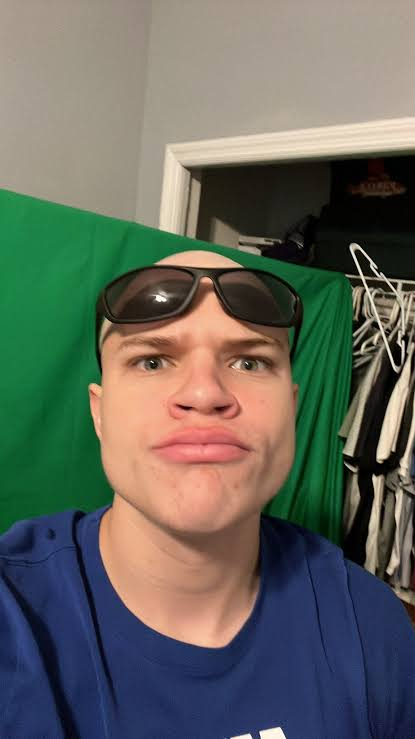

Han föddes 26 september 2001 och är 24 år
Han är 178cm lång
Hans smeknamn är "Junko"
Han rizzar tjejer på stream väldigt ofta
Han har ofta kända tjejer med på stream

Brukar köra kända spel
Han är känd för att "revivea" döda spel, altså kör han spel som ingen annan spelar och gör de populära igen
Han är en twitch steamer och han började streama 2020 och är känd för att vara energisk och spela spel.
Han har streamat de senaste 500 dagarna irad och är den tredje största streamern. Han är känd för att streama Rainbow Six Siege.

2023 Best Breakthrough Streamer (Won)
2023 Gamer of the Year (Won)
2023 Streamer of the Year (Nominated)
2024 Best FPS Streamer (Won)
2024 Gamer of the Year (Nominated)
2025 Best Strategy Game Streamer (Won)
2025 Gamer of the Year (Nominated)
2025 Best Streamer (Nominated)